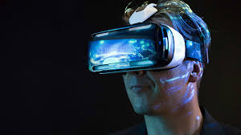

What is computer graphics?
Computer graphics are pictures and films created using computers. Usually, the term refers to computer-generated image data created with help from specialized graphical hardware and software.
Important topics in computer graphics include user interface design, sprite graphics, vector graphics, 3D modeling, shaders, GPU design, implicit surface visualization with ray tracing, and computer vision, among others. The overall methodology depends heavily on the underlying sciences of geometry, optics, and physics.
What is Virtual Reality?
Virtual reality (VR) typically refers to computer technologies that use virtual reality headsets to generate the realistic images, sounds and other sensations that replicate a real environment or create an imaginary setting. VR also simulates a user's physical presence in this environment. VR has been defined as "a realistic and immersive simulation of a three-dimensional 360-degree environment, created using interactive software and hardware, and experienced or controlled by movement of the body" or as an "immersive, interactive experience generated by a computer".
